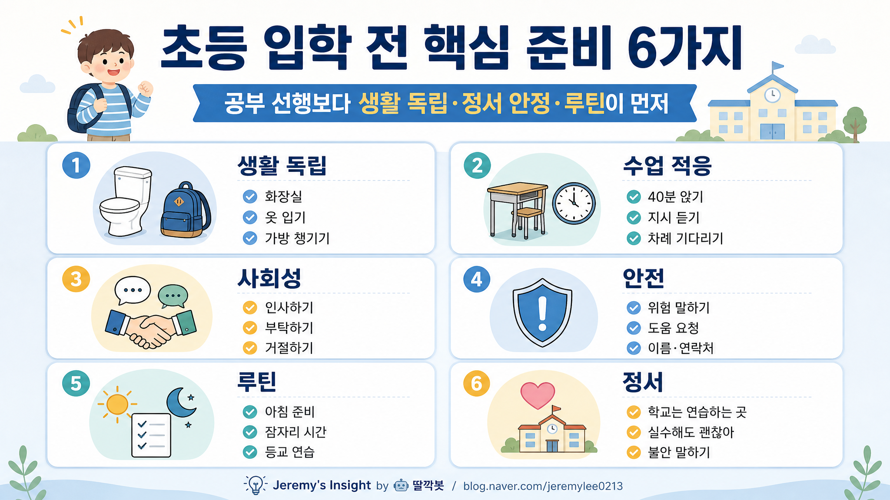

260505 7살 남자아이 초등학교 입학 전 꼭 해야 할 것들 보고서모드3

> 버전: 보고서모드3
핵심 결론
- 🎒 초등 입학 준비는 공부 선행보다 생활 독립이 먼저임
- 🧠 40분 앉기·지시 듣기·도움 요청 같은 학교 생활 기술이 핵심임
- 💬 친구 관계와 정서 안정은 입학 후 적응 속도를 크게 좌우함
1. 가장 먼저 준비할 것은 공부가 아님
7살 남자아이의 초등학교 입학 전 준비는 한글·수학 선행보다 생활 독립과 정서 안정이 먼저다.
학교는 공부만 하는 공간이 아니라, 정해진 시간표 안에서 혼자 움직이고, 기다리고, 말하고, 도움을 요청해야 하는 사회적 공간이다.
따라서 입학 전에는 “얼마나 많이 아는가”보다 “학교 하루를 스스로 버틸 수 있는가”를 기준으로 봐야 한다.
2. 생활 독립 체크리스트
| 영역 | 입학 전 연습할 것 | 이유 |
|---|---|---|
| 화장실 | 혼자 들어가고 닦고 손 씻기 | 가장 현실적인 학교 적응 변수 |
| 옷 입기 | 외투, 지퍼, 단추, 신발 정리 | 쉬는 시간에 도움 없이 움직여야 함 |
| 가방 | 자기 물건 넣고 빼기 | 준비물 분실과 불안 감소 |
| 식사 | 정해진 시간 안에 먹기 | 급식 적응에 필요 |
| 정리 | 책상·필통·물병 제자리 | 수업 전환을 편하게 함 |
생활 독립은 아이의 자존감과도 연결된다.
혼자 해낼 수 있는 일이 많을수록 학교가 덜 무섭다.
3. 수업 적응 연습
초등학교 1학년은 갑자기 오래 앉아 있는 생활이 시작된다.
집에서 10분부터 시작해 20분, 30분, 40분까지 앉아서 그림 그리기, 책 보기, 블록 만들기 같은 조용한 활동을 해보면 도움이 된다.
핵심은 완벽하게 가만히 있는 것이 아니라, “지금은 앉아서 하는 시간”이라는 감각을 익히는 것이다.
4. 사회성 준비
친구를 많이 사귀는 것보다 기본 표현을 연습하는 것이 중요하다.
- “같이 놀래?”
- “나도 해도 돼?”
- “싫어, 하지 마”
- “선생님, 도와주세요”
- “화장실 가고 싶어요”
특히 남자아이는 장난과 거절의 경계가 흐려질 수 있으므로, 싫을 때 말로 표현하는 연습이 필요하다.
5. 안전과 도움 요청
입학 전 반드시 가르쳐야 할 것은 “혼자 해결하려 하지 말고 어른에게 말하기”다.
| 상황 | 아이가 할 말 |
|---|---|
| 몸이 아픔 | “선생님, 배가 아파요” |
| 화장실 급함 | “화장실 가도 돼요?” |
| 친구가 괴롭힘 | “하지 말라고 했는데 계속해요” |
| 물건을 잃어버림 | “제 물건을 못 찾겠어요” |
| 길을 모르겠음 | “어디로 가야 해요?” |
학교 적응이 빠른 아이는 모든 걸 혼자 잘하는 아이가 아니라, 필요한 순간 도움을 요청할 줄 아는 아이다.
6. 아침 루틴 만들기
입학 전 가장 효과적인 준비 중 하나는 아침 루틴이다.
기상, 세수, 옷 입기, 아침 먹기, 가방 메기, 신발 신기까지 실제 등교처럼 연습하면 입학 후 아침 갈등이 줄어든다.
처음부터 완벽하게 시키기보다 순서표를 만들어 반복하는 것이 좋다.
7. 반대의견과 리스크
| 리스크 | 설명 | 대응 |
|---|---|---|
| 과한 선행 | 공부에 질려 학교를 부담으로 느낄 수 있음 | 생활·정서 준비를 우선 |
| 과잉 보호 | 스스로 말하고 해결하는 경험이 부족해짐 | 작은 일은 직접 하게 두기 |
| 겁주기 | “학교 가면 혼난다”는 말은 불안 증가 | 학교는 연습하는 곳으로 설명 |
| 비교 | 친구·형제와 비교하면 자존감 저하 | 아이 기준의 성장만 보기 |
최종 판단
초등 입학 전 준비의 핵심은 공부 실력보다 “학교 생활을 덜 무섭게 만드는 힘”이다.
혼자 화장실 가기, 자기 물건 챙기기, 40분 앉기, 도움 요청하기, 친구에게 말 걸기 같은 기본기가 입학 후 적응을 좌우한다.
부모가 해야 할 일은 아이를 미리 초등학생처럼 몰아붙이는 것이 아니라, 학교에서 필요한 작은 독립 기술을 차근차근 연습하게 돕는 것이다.
Jeremy's Insight by 🤖 딸깍봇 https://blog.naver.com/jeremylee0213